Una vez que sabemos programar las instrucciones necesarias para que todos los elementos de nuestro juego se muevan como queremos, pasaremos a conocer los bloques que nos permitirán controlar esos movimientos con unos bloques muy especiales a los que llamaremos bucles y condicionales.
También te presentaré otros bloques que encajan en los condicionales, son los sensores y operadores.
¡No te lo pierdas, es muy importante!
1. Controla tu videojuego
En los videojuegos hay bloques de la categoría control que nos ayudarán a controlar los movimientos de personajes y objetos.
En las siguientes pestañas puedes ver cómo utilizarlos:
Bucles
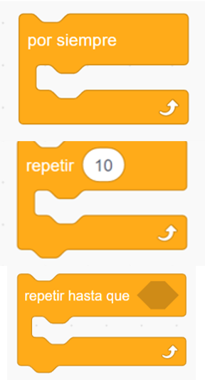
Un bucle es una estructura de la categoría de control que ejecuta una serie de instrucciones en orden normal, de arriba a abajo, pero al terminar vuelve a la parte superior para iniciar de nuevo la lectura.
En la imagen de la izquierda tienes tres tipos de bucles:
El bucle por siempre ejecuta los bloques incluidos dentro una y otra vez.
El bucle repetir... ejecuta las instrucciones que están dentro en el orden en que aparecen y vuelve al principio repitiéndolas el número de veces que indiquemos. Luego pasa al resto del programa.
Con el bucle repetir hasta que... se repetirán las instrucciones indicadas hasta que se cumpla la condición que pongamos.
En los videojuegos es muy normal que algunos personajes se muevan constantemente por la pantalla de lado a lado, por lo que es una situación ideal para usar bucles.
Condicionales
Nos enfrentamos a diario a condiciones. Seguro que has escuchado muchas veces frases de este tipo:
"Si me ayudas a hacer las tareas de casa, vamos al cine"
A la hora de programar, la estructura de esta frase se repite mucho. Este esquema resume cómo funciona:
En la frase anterior, la palabra "Si" anuncia que hay una condición, "me ayudas a hacer las tareas de casa" es la condición y "vamos al cine" es la consecuencia.
Los condicionales son estructuras de la categoría de control.
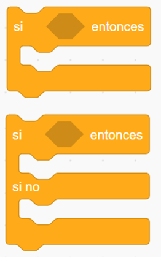
Al igual que los bucles, se colocan alrededor de otros bloques y ejecutan un control sobre ellos.
En la imagen de la izquierda ves los dos bloques condicionales que te van a ser útiles:
Bloque si...entonces: Si sucede lo que pongamos en la ventana entonces se ejecutarán las instrucciones que pongamos dentro.
Bloque si...entonces: Si sucede lo que pongamos en la ventana entonces se ejecutarán las instrucciones que pongamos dentro.
Si no...entonces: Si no sucede, se ejecutarán otras instrucciones diferentes, que indicaremos dentro.
Es importante que tengas en cuenta que para que funcione bien una estructura de condicional tiene que estar dentro de un bucle por siempre para que siempre se cumpla la condición y se produzca la consecuencia.
Sensores
Los sensores son los bloques de color azul claro que encajan en los condicionales. Permiten que nuestros objetos interactúen con el usuario mediante los siguientes eventos:
Cuando toca el puntero del ratón o un borde:
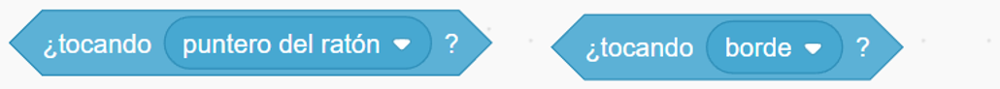
Cuando toca un color:
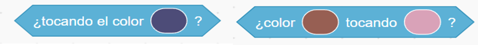
Cuando tocamos una tecla del ordenador:
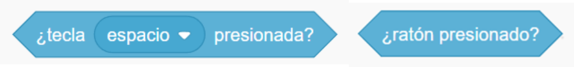
Mediante preguntas y respuestas:
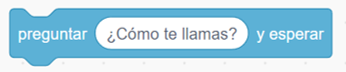
Sensores que encajan el los operadores para dar información del volumen del sonido, posición de los objetos, etc:
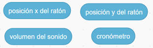
Aquí tienes algunos ejemplos:
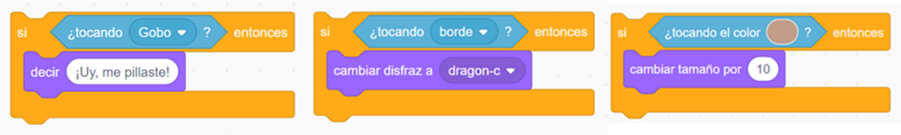
Operadores
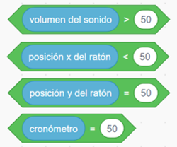
Los operadores son los bloques de color verde que nos sirven para guardar información numérica.
Los que más vamos a utilizar junto con los condicionales son los que ves a la izquierda.
Contienen dos cajas ovaladas que relacionan un sensor con una magnitud:
> Mayor que.
< Menor que.
= Igual a.
En el programa de nuestro videojuego nos servirán para interactuar con el volumen del sonido, con la posición x o y del ratón o con el cronómetro.
¿Qué operador utilizarías cuando hay dos condiciones? Piensa en estos ejemplos:
"Si haces las tareas de casa y los deberes, vamos al cine".
"Si haces las tareas de casa o los deberes, vamos al cine".
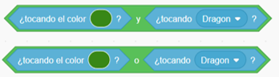
En este caso utilizamos los operadores que tienes a la izquierda, llamados operadores booleanos.
Los operadores booleanos son aquellos en los que nos dicen si se cumple una condición compuesta, es decir, podemos poner dos condiciones en una.
Como has podido observar observar en el ejemplo, para que se cumpla el resultado de la condición deben de darse dos situaciones previas.
Aquí tienes un ejemplo con condicionales, sensores y operadores:
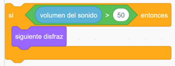
Vídeo
El siguiente vídeo te ayudará a comprender mejor la programación con bucles y condicionales:
Lectura facilitada
Los bloques de la categoría control
controlan los movimientos
de personajes y objetos.
Los bloques de control
se usan así:
Bucles
Un bucle es una estructura
de la categoría de control.
El bucle sigue instrucciones.
Cuando el bucle termina las instrucciones
empieza la lectura otra vez.
Tienes tres tipos de bucles:
-Por siempre
Repite los bloques de dentro
una y otra vez.
-El bucle Repetir...
Repite los bloques de dentro
las veces que pongas.
-El bucle Repetir hasta que... s
Repite los bloques de dentro
hasta que se cumpla
la condición.
Puedes usar los bucles
para que los personajes se muevan
sin parar.
Condicionales
En tu vida usas las condiciones.
-Un ejemplo de condición es:
Si me ayudas a hacer las tareas de casa, vamos al cine.
Las condiciones tienen dos partes:
-La condición
es lo que tienes que hacer.
-La consecuencia
es lo que pasa después.
Los condicionales en Scratch
están en la categoría de control.
Los condicionales se colocan
alrededor de otros bloques
para controlar esos bloques.
Los dos bloques condicionales
más útiles son:
-Bloque Si...entonces
hace lo que pongas dentro
cuando se cumple la condición.
-Bloque Si...entonces
Si no...entonces
hace lo que pongas dentro
cuando sucede la condición.
Cuando no se cumple la condición
se hacen otras cosas.
Las condiciones están
en un bucle.
Sensores
Los sensores son los bloques
de color azul claro.
Los sensores encajan
en los condicionales.
Los sensores hacen
interacción entre las personas
y los objetos.
Esta interacción se hace
con estos eventos:
Tocar el puntero del ratón
o un borde.
Tocar un color.
Tocar una tecla del ordenador.
Con preguntas y respuestas.
Otros sensores.
Estos son ejemplos de programas.
Operadores
Los operadores son los bloques
de color verde.
Estos bloques guardan información.
Esa información es numérica.
Los operadores más usados son:
> Mayor que.
< Menor que.
= Igual a.
Usa los operadores en el videojuego para:
-El volumen.
-La posición.
-El cronómetro.
Los operadores booleanos
se usan para condiciones compuestas.
Las condiciones compuestas tienen dos condiciones
Este es un ejemplo de operador boobleano:
Vídeo
El vídeo explica las bucles y
condicionales.
Audio
2. Juega con los bloques
Los bucles se utilizan mucho en la programación y pueden ahorrarte muchos pasos.
Es importante que practiques con los ejercicios que tienes a continuación para que tengas muy claro cómo utilizarlos.
2.1. ¿Repites?
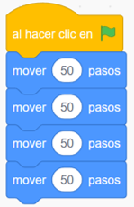
Imagina que tienes que desplazarte 200 pasos a la derecha con el bloque mover 50 pasos. Una opción es el programa que tienes a la izquierda, pero ¿hay otra forma más sencilla de programarlo?
¿Te ayudaría la estructura repetir para hacerlo más rápido? Si no lo recuerdas míralo, solo necesitarás un bloque.
2.2. ¿Repites o repites por siempre?
Coloca un objeto en el escenario que necesite girarse una vez que llega al borde.
Haz un programa sencillo para que esté girando siempre cuando llegue al borde. ¿Qué bloques utilizas?
¿Has incluido un bloque para que gire de izquierda a derecha o de derecha a izquierda y el personaje no se ponga "patas arriba"?
2.3. ¿Hasta cuándo repites?
¿Qué bloque tendrías que utilizar si quieres que tu objeto o personaje repita una acción hasta que suceda algo?
¿Qué condición le pondrías? ¿Con qué bloque lo harías?
Realiza un programa sencillo con este tipo de bloques y comprueba si cuando se cumple la condición se produce la consecuencia programada.
3. ¿Con qué condición?
Te habrás dado cuenta de la importancia de los condicionales en la programación.
A continuación tienes ejercicios sencillos para elaborar programas en los que tienes que utilizar condicionales y , en algunas ocasiones, sensores y operadores.
Puedes hacer los siguientes ejercicios en pareja o pequeño grupo si presentan mucha dificultad para ti.
3.1. Elige bien
Recuerda el esquema que hemos utilizado para los condicionales eligiendo las opciones correctas en cada caso:
3.2. Rebota sin parar
¿Qué bloque o estructura utilizarías si quieres que un personaje rebote y cambie de dirección cada vez que llegue al borde?
¿Sabrías hacerlo sin utilizar un bloque de condicional?
Realiza un programa sencillo para ello y comprueba si funciona.
3.3. ¿Qué consecuencia tiene?
Elabora los siguientes programas para un personaje para que se cumplan estas instrucciones:
Si toca a otro personaje cambie de disfraz.
Si toca un determinado color cambie el fondo.
Si la tecla espacio está presionada se escuche un sonido.
Si se cumplen dos condiciones emita un mensaje.
3.4. ¿Más o menos?
Elabora los siguientes programas para un personaje para que se cumplan estas instrucciones:
Si la posición x del ratón es menor de 50 cambie de disfraz.
Si el volumen es mayor de 50 suene un sonido de alarma.
4. Disfraces que sorprenden
Ahora que sabes utilizar los bucles y condicionales estás preparado o preparada para darle vida a tus personajes y objetos Estas estructuras te ayudarán a programar cambios de apariencia que sumarán emoción y dinamismo a tu videojuego.
Habrás observado que los cambios más usuales son los siguientes:
Cambio de color, forma o tamaño.
Cambio de posición o expresión.
Cambio de vestimenta.
Emitir un mensaje.
Efectos especiales.
Recuerda que puedes elegir la opción que decidas. Pero puedes probar a seguir haciendo la siguiente y quizás descubras algo nuevo que creías que no sabías.
OPCIÓN A: Recuerda lo que sabes
Recuerda lo que sabes sobre bucles y condicionales completando los huecos que faltan.
OPCIÓN B: Cambio continuamente de disfraz
Haz un programa para que un personaje siga las siguientes instrucciones al hacer clic en la bandera verde:
Se desplace 10 pasos.
Gire 15 grados hacia la izquierda.
Rebote si toca un borde.
Cambie continuamente de disfraz.
Recuerda que la programación funcionará mejor si elaboras un programa para el movimiento y otro para el cambio de disfraz.
Lumen dice ¿Necesitas ayuda con el código?
¿No ha funcionado tu programa? Si es así tienes aquí un ejemplo:
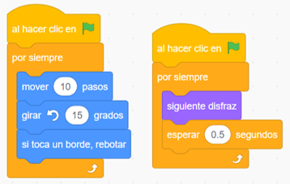
OPCIÓN C: Moverme me hace cambiar
Ya sabes que en los videojuegos es muy importante la interacción de los jugadores.
Te propongo que realices un programa en el que un personaje u objeto que cambie de disfraz cuando los usuarios utilicen las teclas arriba, abajo, izquierda y derecha para desplazar a los personajes u objetos a esas posiciones.
Lumen dice ¿Necesitas ayuda con el código?
¿No ha funcionado del todo bien tu programa?
Necesitarás para cada cambio de disfraz los siguientes tipos de bloques:
Bloque de evento Al pulsar tecla...
Bloque de movimiento.
Bloque de cambio de disfraz.
OPCIÓN D: Colisiones impactantes
En los videojuegos los personajes se van encontrando y colisionando con otros personajes y objetos. Si pasa esto, normalmente sufren cambios de apariencia: cambio de color, tamaño, posición, emiten un mensaje...
Comprueba que sabes hacerlo realizando estos programas:
Si el personaje está tocando a un segundo personaje; entonces cambie de apariencia emitiendo un mensaje.
Si el personaje está tocando un color; entonces modifique su tamaño.
Si el personaje está tocando un borde; entonces cambie de disfraz.
5. Pantallas mágicas
El escenario de Scratch es la pantalla del juego. Programando los fondos podemos conseguir que sea una pantalla atractiva o incluso mágica.
Habías seleccionado en qué momentos podías cambiar de fondo para dar más emoción, realismo o dinamismo.
Con lo que sabes de bucles, condicionales, sensores y operadores, te invito a realizar algunos ejercicios para conseguirlo. Se trata de diferentes opciones para elegir aquella en la que te sientas más cómodo o cómoda, aunque todas son interesantes.
OPCIÓN A: Verdadero o falso
Indica si la siguiente afirmación es verdadera o falsa.
Retroalimentación
Falso
No es del todo cierto porque aunque sería correcto utilizar estos bloques, el bloque siguiente fondo, no es un bloque de movimiento sino de apariencia.
OPCIÓN B: ¡Cuidado con chocar!
Habrás observado que a veces en los videojuegos, cuando dos personajes u objetos colisionan o se produce un encuentro importante, hay un cambio de fondo para dar más emoción o para trasladarnos a un espacio diferente.
¿Qué tipo de bloques crees que necesitas Para causar este efecto?
Selecciona los que necesites y elabora un programa para un personaje u objeto que cumpla lo siguiente: al tocar a otro personaje o tocar un color, se cambie el fondo.
Lumen dice ¿Necesitas ayuda con el código?
Si necesitas alguna pista para realizar el programa, aquí tienes un ejemplo:
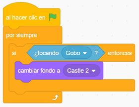
OPCIÓN C. Un buen final
Otro buen momento para cambiar de fondo puede ser cuando se termina la partida o pasamos un nivel.
Te invito a que hagas un programa para cambiar de fondo cuando se termine la partida.
Lumen dice ¿Necesita alguna pista?
Te recuerdo los tipos de bloques que necesitas:
Condicional para indicar cuándo se cambiaría de fondo.
Operador o sensor para encajarlo en el condicional (posición en la pantalla, tocar un borde o color...)
Bloque de apariencia.
Bloque de control.
OPCIÓN D: Como si hicieras magia
¿Cómo harías para que la pantalla cambie continuamente como si estuviera en movimiento ?
Elabora un programa para que si se recibe un mensaje, hay un encuentro importante con un personaje u otro suceso, el paisaje adquiera movimiento.
Lumen dice ¿Necesitas ayuda?
Te cuento un truco para que te resulte más fácil hacer este ejercicio:
Prepara varios fondos muy parecidos en los que cambie sólo algún detalle: un árbol, mobiliario..... Al cambiar continuamente de fondo dará la sensación de movimiento.
6. Sonidos increíbles
Ya conoces las posibilidades que tiene el sonido en Scratch.
En el apartado 4.4. estudiaste cuándo introducir música de inicio, efectos sonoros increíbles, música envolvente, etc.
Con los bucles, condicionales, sensores y operadores puedes conseguir todos estos efectos. Te propongo que practiques con algunos ejercicios. Realiza las opciones que quieras.
¡Ánimo. Será fácil y divertido!
OPCIÓN A: Un poco de orden
Ordena las siguientes instrucciones para que siempre que el personaje Dragón toque al personaje Gobo, se escuche un sonido sonido durante 2 segundos y a continuación se escuche el mensaje ¡Perdiste!
Bucle Por siempre
Condicional Si Dragon toca a Gobo, entonces...
Tocar sonido... durante 2 segundos
Decir ¡Perdiste!
Comprobar
¡Correcto!
No es correcto... Respuesta correcta:
OPCIÓN B: ¡Que la música no pare!
En muchos videojuegos se escucha siempre una música de fondo o al menos en parte de él. ¿Cómo podrías programarlo?
Piensa en las instrucciones, son bastante sencillas: Tiene que iniciarse una música desde el principio del juego, que se escuchará siempre hasta que finalice.
No olvides que, al mismo tiempo tienen que ejecutarse las demás instrucciones.
Lumen dice ¿Necesitas ayuda con el código?
Si tu programa tiene algún fallo y no sabes cómo solucionarlo, aquí tienes un ejemplo de programa:
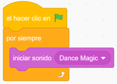
OPCIÓN C: Colisiones sonoras
En las colisiones o cuando nos encontramos con un personaje podemos introducir un sonido.
Elige cualquiera de los sonidos que tienes preparados, ya sea de la galería, de tu dispositivo, grabación, texto a voz...
Piensa que tipo de bloques necesitas para que se escuche un sonido cuando un personaje colisione con otro personaje u objeto,
Puedes ayudarte haciendo un diagrama de flujo.
Si necesitas ayuda para hacer un diagrama de flujo, haz clic aquí para acceder a la guía del alumnado de Aprender a aprender en su apartado Creo un diagrama.
Por último Haz clic en el programa y comprueba si lo has hecho bien.
Lumen dice ¿Necesitas ayuda con el código?
¿Has tenido dificultades para hacer la programación?. Si es así consulta esta imagen:
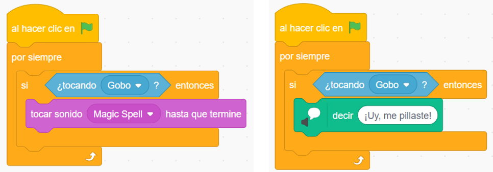
OPCIÓN D: Game over
Cuando termina la partida, pasas de nivel, pierdes vidas... es importante que el jugador se sorprenda con algún tipo de sonido.
Realiza un programa para que cuando se cumpla una condición haya alguna de estas consecuencias:
Sonido que cause un efecto especial.
Aumento de volumen u otro efecto de sonido.
Emitir un mensaje.
Motus dice ¿Te has equivocado en algo?
Cuando queremos aprender algo, lo normal es equivocarse al principio. Fallar forma parte de aprender. ¿Recuerdas cuando montaste en bici por primera vez? ¿o cuando intentabas nadar en el agua? Seguro que al principio no fue fácil, pero cada vez que fallabas, lo intentabas de nuevo. Con cada fallo aprendemos del error y lo mejoramos para la vez siguiente.
Para aprender de tus errores sigue estos consejos:
Me doy cuenta de en qué parte he fallado.
Busco la forma de mejorar ese error.
Lo intento de nuevo.
Entiendo que el error es importante para aprender.